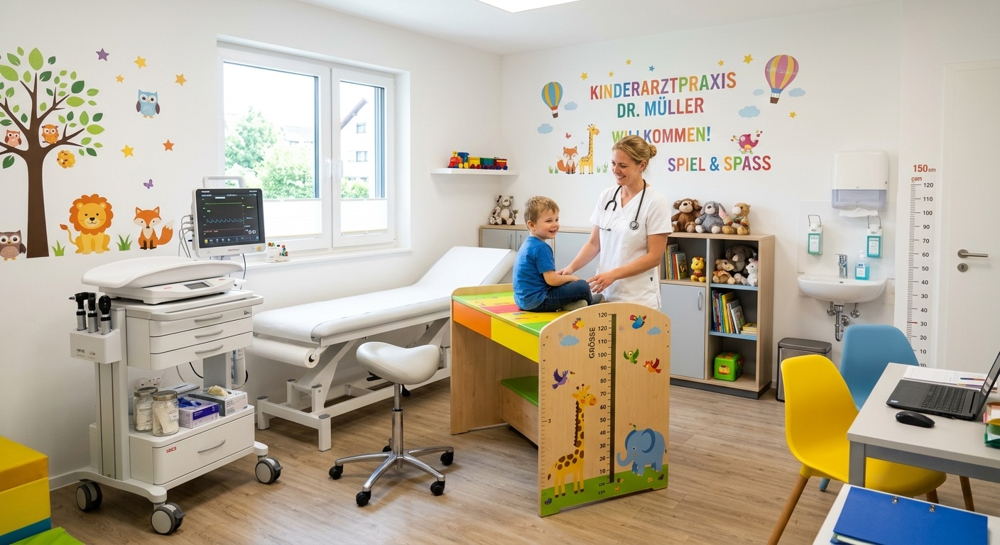
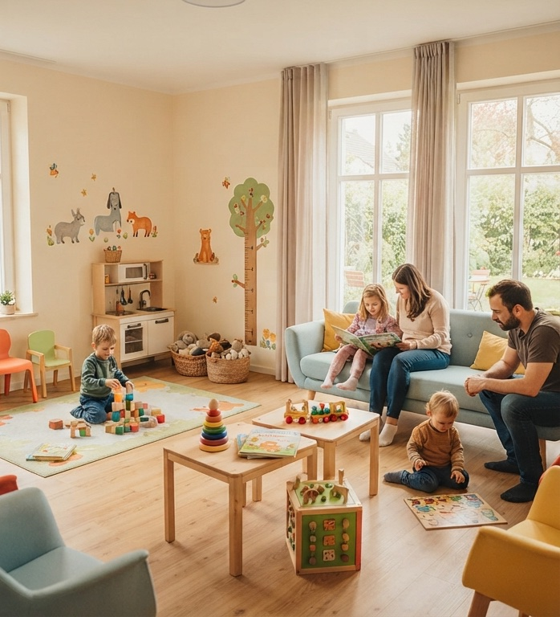
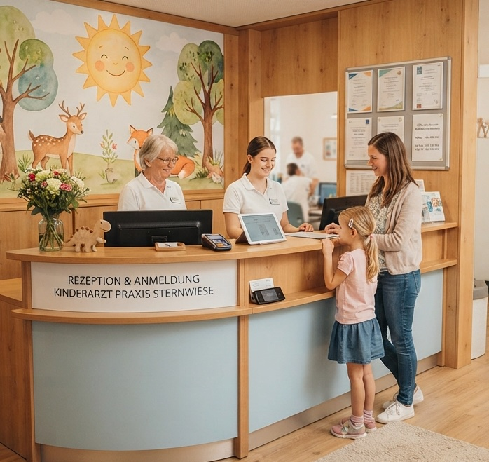
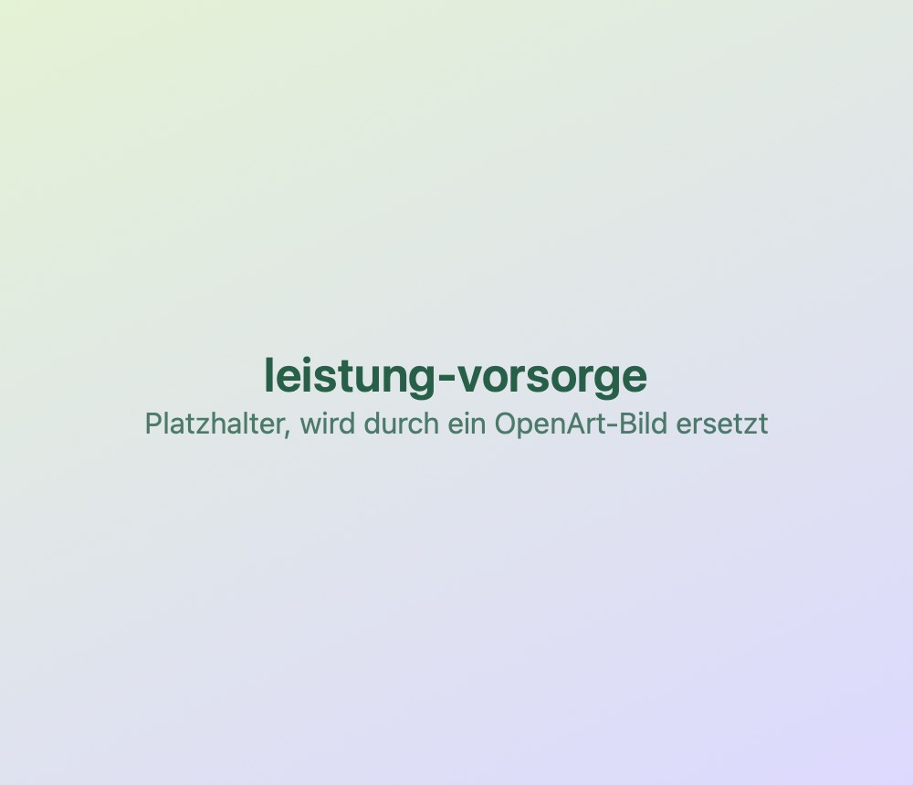
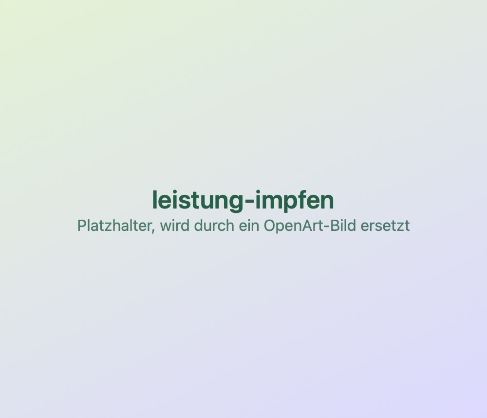
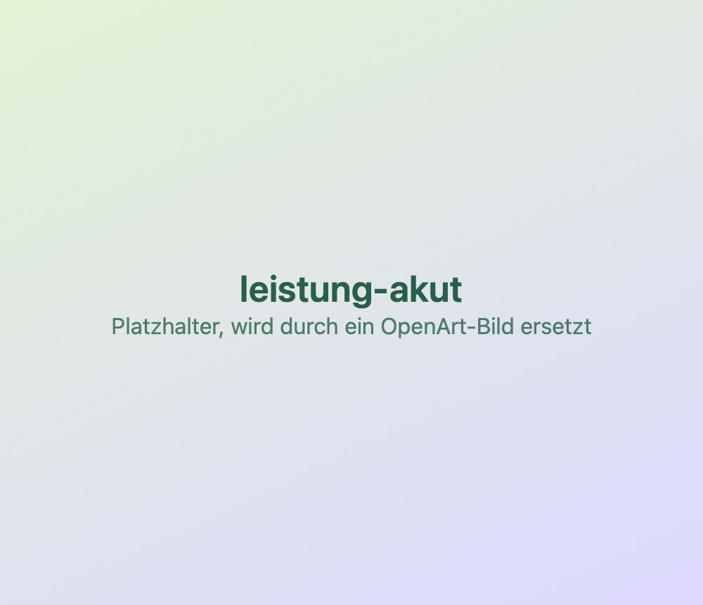
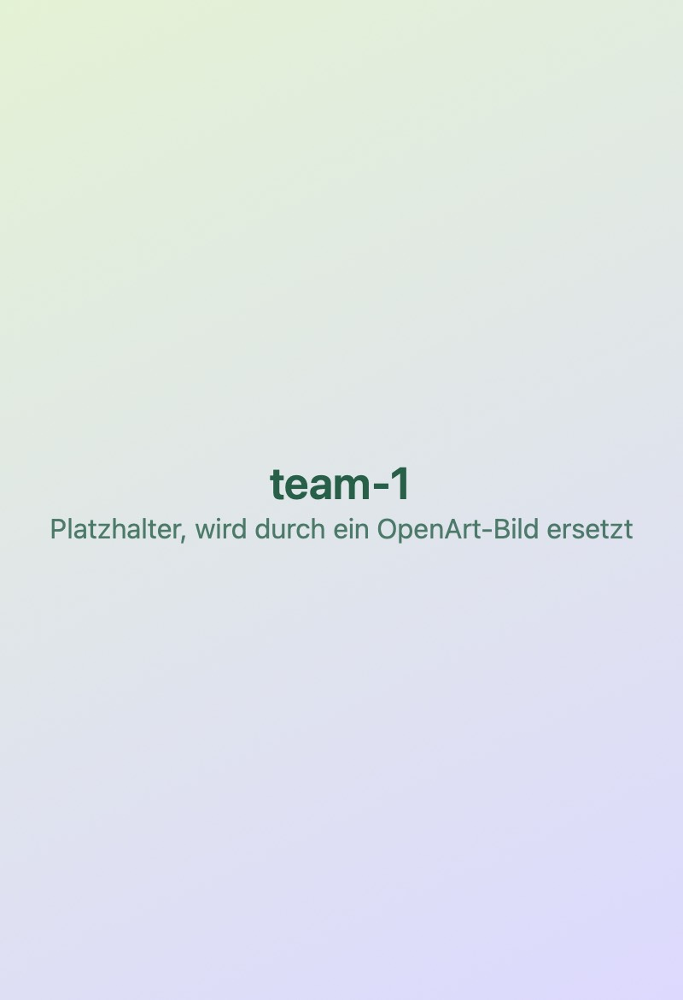
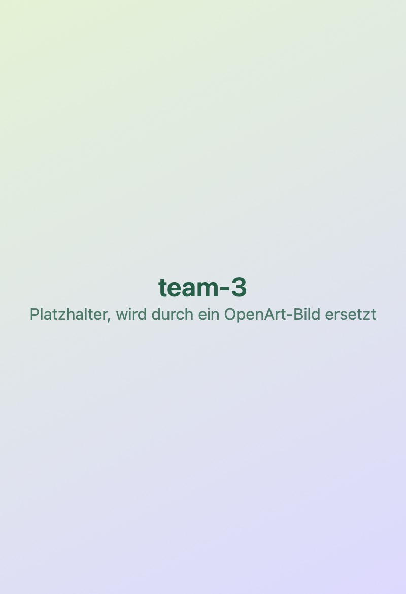
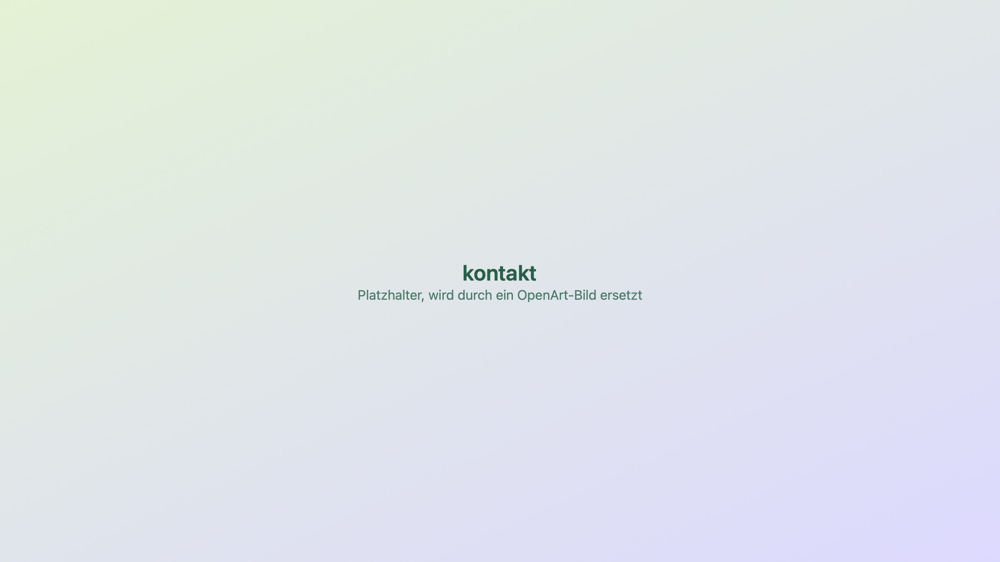

Gut aufgehoben von Anfang an
Kinder- und Jugendmedizin für Babys, Kinder und Jugendliche
Willkommen in der Kinderarztpraxis Sternwiese. Wir begleiten Ihr Kind von der ersten Vorsorge bis zum Erwachsenwerden, mit Zeit, Geduld und einem Team, das Kinder mag.
Termin anfragenPraxis
Ein Ort, an den Kinder gern zurückkommen
Helle Räume, ein Wartezimmer mit Spielecke und Ärztinnen, die erst einmal Hallo sagen. Wir erklären jeden Schritt so, dass Ihr Kind ihn versteht, und nehmen uns Zeit für Ihre Fragen.


Leistungen
Was wir für Ihr Kind tun

Vorsorge
Alle U-Untersuchungen von der U2 bis zur J1

Impfungen
Nach den Empfehlungen der Ständigen Impfkommission

Akutsprechstunde
Jeden Morgen, wenn es schnell gehen muss
Für Eltern
Was uns wichtig ist
Ein Arztbesuch ist für Kinder aufregend genug. Deshalb machen wir den Rest so einfach wie möglich, für Ihr Kind und für Sie.
-
Zeit für Fragen
Jeder Termin plant Zeit für Ihre Fragen ein. Was offen bleibt, klären wir auch gern später am Telefon.
-
Zwei Wartebereiche
Kinder mit Fieber oder Ausschlag warten getrennt von Kindern, die zur Vorsorge oder zum Impfen kommen.
-
Termine online
Vorsorge und Impfungen buchen Sie rund um die Uhr. Für akute Fälle halten wir jeden Tag Plätze frei.
Team
Die Menschen hinter der Praxis
Zwei Fachärzte für Kinder- und Jugendmedizin und ein Praxisteam, das Ihr Kind beim Namen kennt.

Dr. Clara Wendling
Fachärztin für Kinder- und Jugendmedizin
Dr. Paul Ahrens
Facharzt für Kinder- und Jugendmedizin

Selin Kaya
Medizinische Fachangestellte
Greta Holm
Praxismanagement
Eltern über uns
Was Familien erzählen
„Unsere Tochter hatte große Angst vor dem Impfen. Dr. Wendling hat ihr alles am Teddy gezeigt, danach war es halb so schlimm.“
„Morgens angerufen, mittags dran. Und niemand hat uns das Gefühl gegeben, dass wir stören.“
„Wir kommen seit der U2 hierher. Inzwischen freut sich unser Sohn sogar auf die Spielecke.“
